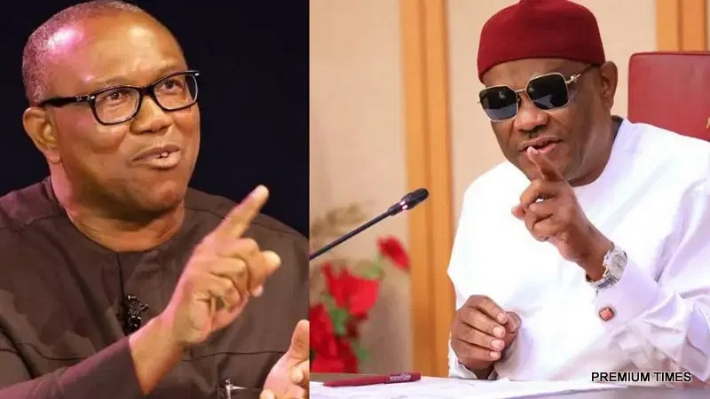

Obi will run to Cameroon if confronted with burdens of presidency – Wike

FCT Minister Nyesom Wike accused Peter Obi, the Nigeria Democratic Congress presidential candidate, of lacking the capacity to address Nigeria’s challenges. Speaking Tuesday at a Rainbow Coalition and Stakeholders’ Meeting in Abaji, Abuja, Wike said Obi would flee to Cameroon rather than confront the demands of the presidency. He praised President Bola Tinubu for making difficult decisions and said the country needs a leader willing to take responsibility when problems arise.
Wike urged residents and political leaders in Abaji to support Tinubu’s re-election bid in 2027. He challenged the area council chairman, councillors and other leaders to turn their stated support into votes in their wards, saying he would judge them by their results. He also said the FCT should match and surpass Rivers State’s electoral performance, and that he would use the same mobilisation strategy in Abuja.
The minister cautioned residents against repeating what he described as a mistake in the 2023 elections: electing representatives who, he said, did not stay in touch with their constituents or address their concerns. He asked whether the elected representative had returned to meet residents or taken action on matters affecting the FCT, and urged voters to hold political aspirants accountable for development problems in their communities.
Wike said he planned to meet FCT youths on Wednesday to discuss political mobilisation and issues affecting their participation in the coming elections. He told stakeholders that resources and arrangements for the campaign were being put in place and expressed confidence in the Rainbow Coalition’s ability to mobilise support for Tinubu. He also reiterated that he wanted Abaji’s electricity problem addressed before the 2027 elections, directing the area council chairman to intensify efforts to restore power.
Source: Vanguard